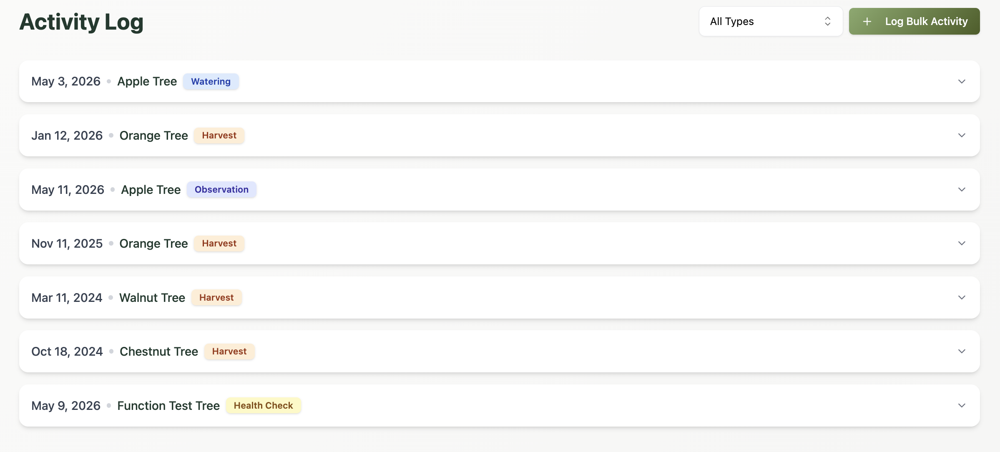

Farm Field Activity Tracking
Track Orchard Work From Field to Record
RootedField gives growers one place to record pruning, spraying, fertilizing, inspections, harvests, maintenance, and recurring orchard tasks.

Keep Orchard Work Organized
Log Field Work
Record pruning, fertilizing, inspections, harvests, and other orchard activities.
Create Care History
Build a useful record of what happened, when it happened, and where it happened.
Coordinate Tasks
Help teams and operators stay aligned across recurring orchard maintenance.
Replace Scattered Notes With Reliable Records
Keep your orchard activity history organized, searchable, and useful season after season.